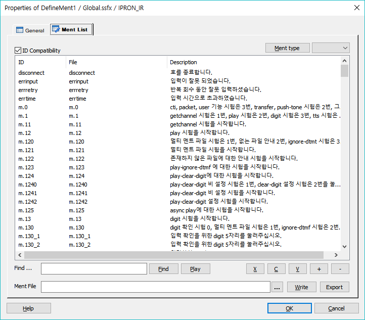
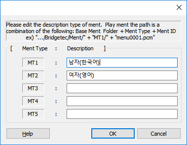

시나리오에서 사용되는 모든 멘트를 전역으로 등록하여 Play, GetDigit등 멘트를 재생할 시 ID 체계로 관리 할 수 있습니다.
ICON

PROPERTIES
 Ment List
Ment List

ID Compatibility : ForCus v5 부터는 Ment ID에 변수명 규칙을 적용하여 숫자로 시작하는 Ment ID를 사용할 수 없어서 시나리오를 수정해야 하는데 시나리오의 양이 많을 경우 매우 번거롭게 됩니다. 그래서 호환성 체크 박스를 추가 하여 숫자로 된 Ment ID도 사용할 수 있도록 합니다.
단, 숫자로 사용 할 시에 엔진 내부적으로 숫자로된 Ment ID를 처리 하기 위한 특별한 로직을 Ment ID를 만날 때 마다 호출해야 하기 때문에 SLEE 엔진 동작에 있어 약간의 처리 부하가 있을 수 있습니다.(ForCus NMS 버전 전용)
List Box
- 멘트 리스트의 각 항목은 마우스 더블클릭을 하면 바로 수정 할 수 있습니다.(F2 버튼도 사용 가능)
ID : 멘트 파일을 ID로 설정한 내용을 표시 합니다.
File : 실제 멘트 파일 이름 입니다.
Description : 멘트 파일 내용을 설명 합니다.
Ment type Button : Multi Ment Type을 사용할 경우 미리 듣기를 위한 타입을 선택합니다. 기본 멘트일 경우는 선택하지 않으면 됩니다.

- Ment Type 은 고정되었고, Description은 설정가능 합니다.(Ment Type은 고정되어 있기 때문에 각 타입을 실제 서버에서 사용할 때는 MT1 ~ MT5 에 해당하는 디렉토리를 만들어 사용해야 한다., 여기 창에서는 각 타입에 대한 설명을 추가하여 ChoiceMentType 아아템 에서 멘트 선택 시 활용한다.)
Find ... : 검색할 문자를 입력합니다.
Find Button : Find... 에 입력한 문자를 멘트 리스트 ID, File, Description에서 검색 합니다.(검색 후 Find버튼을 계속 누르면 검색 한 내용이 있는 리스트로 이동)
Play Button : List Box에 선택 되어진 멘트를 재생 합니다. 멘트를 재생하기 위해서는 실제 멘트가 있는 경로를 지정 해 주어야 합니다.(Tools>Options>Debug Tab의 Ment Path, Common Ment Path가 설정 되어 있어야 함)
Stop Button : 재생 중인 멘트를 중지 합니다.
X Button : 선택한 리스트를 잘라냅니다.(Ctrl+X)
C Button : 선택한 리스트의 내용을 복사 합니다.(Ctrl+C)
V Button : 복사한 리스트의 내용을 붙여넣기 합니다.(Ctrl+V)
+ Button : 리스트의 맨 밑에 입력 할 수 있도록 Row를 추가합니다.
- Button : 리스트에서 선택되어진 멘트의 Row를 삭제 합니다. 키보드의 Delete키를 눌러도 삭제 됩니다.(Ctrl+A키를 누르면 멘트 리스트 전체를 선택 합니다)
... Button : 작성된 멘트 파일을 로드 합니다.(읽어서 List Box에 출력하고 Ment Path 표시)
Write Button : List Box에 있는 멘트 리스트를 파일에 출력 합니다. Ment File 항목 에 로드된 멘트 리스트 파일이 있으면 그 파일에 바로 출력 합니다.
Export Button : List Box에 있는 멘트 리스트를 파일로 생성 합니다.
RELATED